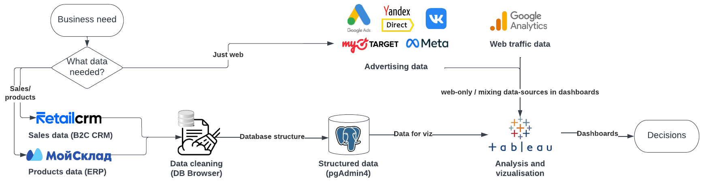
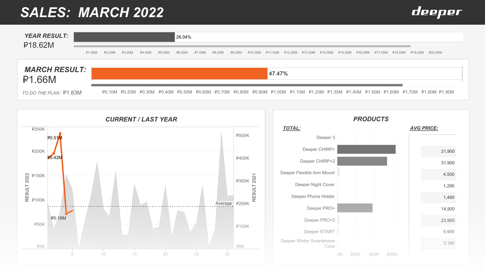
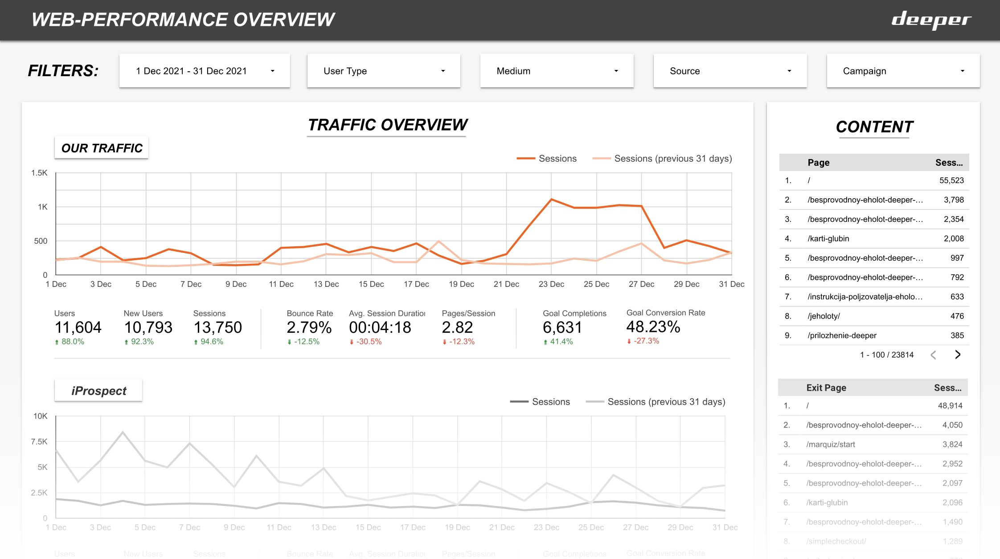
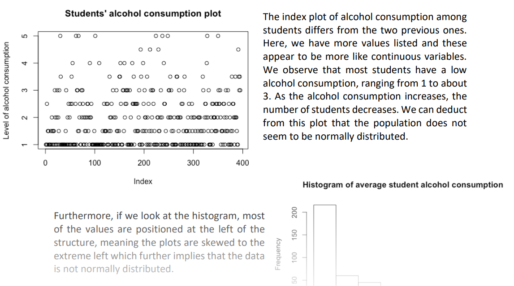
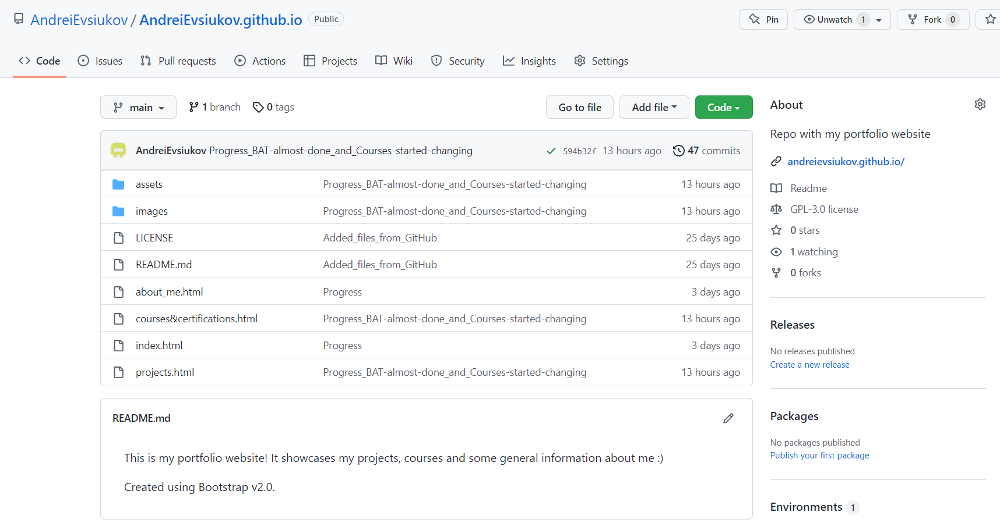

business analytics
This section demonstrates business performance analytics work which I did
during the last two years at Deeper Russia. At this company I had the opportunity to gain experience in all
levels of data-science process: making decisions about data governance, designing data-structures,
hands-on data mining and cleaning, performing analysis and creating visualisations.
Insights found were presented to direct colleagues in the marketing department and to the commercial
director of the company.
Scheme of the processes:
Summarizing tasks:
- Data governance design for sales and marketing departments.
- Extracting data from various sources - RetailCRM, OpenCart (CMS), Мой Склад (ERP), Google Analytics, various digital advertising systems.
- Data cleaning and normalization.
- Joining different sources by creating relational databases.
- Data mining and performing analysis.
- Creating visualisations and interactive dashboards.
- Communicating results to colleagues.
Here are several examples of visualisations in Tableau Public:
*data is shown with the approval of ex-employer
web analytics
In addition to analyzing operational data, I was also responsible for web
analytics at Deeper Russia.
Several platforms were used for this purpose: Google Analysis, Yandex Metrica and Google Data Studio (for visualisations).
Activities:
- Setting up analytics platforms (filters, segments, channel grouping, setting up events in Google Tag Manager)
- Daily monitoring of our website performance through Google Analytics and eCommerce CMS - OpenCart.
- Analysis of web traffic from different channels and customer behavior on the site.
- A-B testing.
- Data viz in Google Data Studio
Even more, I was setting up all digital-advertising in the company.
A big share of web
analytics work was dedicated to assessment of results of advertising campaigns from 5 advertising
systems.
Here are several examples of visualisations in GDS:
*data is shown with the approval of ex-employer
reseach
This study was done as part of a quantitative data analysis course during my master's
degree at Toulouse 1 Capitole University.
The main objective of the study was to search for any
relationships between school student alcohol consumption and the level of education of their
parents.
Analysis was performed in Rstudio (R 4.1.3).
Dataset on kaggle.
The research paper in PDF:
business analytics: BAT

In 2020, I did a 5-month internship at
British American Tobacco as a
business analyst intern.
Internship was dedicated to an innovative tobacco heating brand GLO.
Main project: monthly updating and improving business performance report related to brand GLO (activities across the whole Northeastern part of Russia).
To protect privacy of my ex-employer and to fulfil NDA most of the data is hidden.
web development
Also, a big project was the development of this website.
The whole website is written from scratch using Bootstrap framework .
Knowledge of web-development not only give me the ability to create projects like this, they are
also a big plus in working with data.
They allow to effectively use scrapping and parsing techniques to get data out of the web, if it is
needed for analysis (or for enriching initial data).
My GitHub repository:
